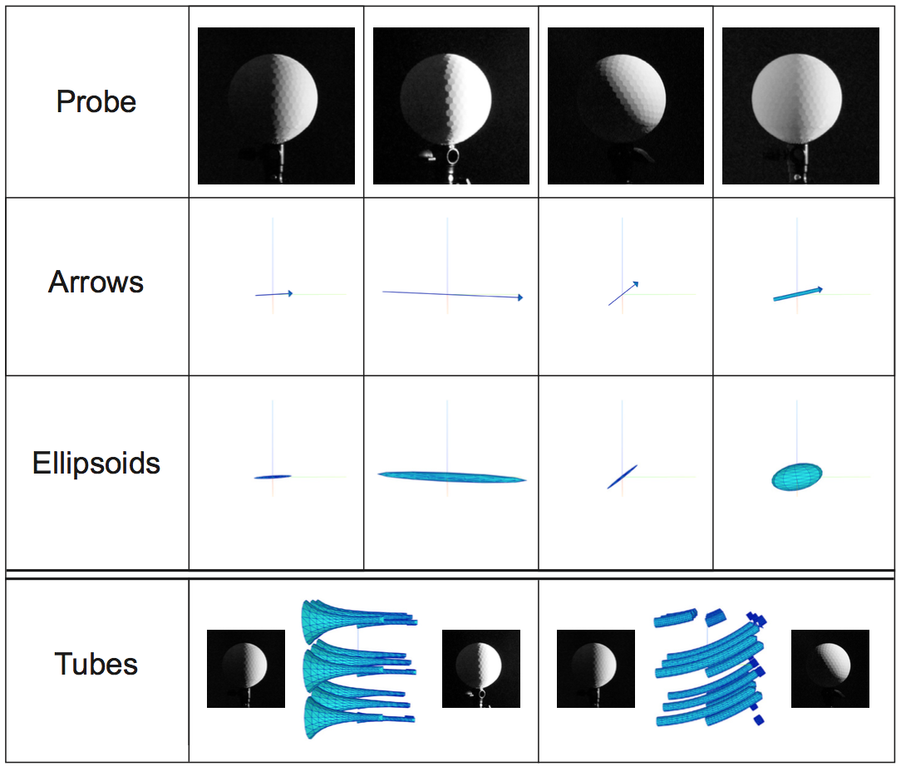

This page contains information on the visualization tool elements and instruction on how to use the tool.
The tool is described in the paper Kartashova et al.(in submission)
The measurements are translated to light properties according to Cuttle (2003, 2013), see references below.
Using the "Input and output" menu panel, you can either upload your own measurement file or pick an example.
To upload your own measurement file, click "Choose file" (Chrome) or "Browse" (Firefox) button.
Pick a measurement file and click "Open" button. The measurements will be displayed in the visualization window and the file name will be shown next to the "Choose file" button. The panel will be framed in green to denote which input type is used.
Note that the light measurements file should be comma-separated with corresponding extension (*.csv). Every line should represent a measurement point containing six measurements (one on every side of the cube) and three coordinates of the measurement point in space. The measurements showld be arranged according to the cube sides 1-6, 1 and 4, 2 and 5, 3 and 6 on oppozite sides, see cube image below.
To upload an example, pick an example name from the drop-down list.
The example file will be displayed in the visualization window. The panel will be framed in green to denote which input type is used.
You can see images and more information of the example by clicking on the "See example image(s) and data" button. Details will be opened in a new window (tab).
Using the "General" menu panel, you can change parameters of (all) visualizations.
Using the "Visualization type" dropdown list you can chose the visualization shapes.
The arrows visualization extend Jacobs’ [2014] representation of light vectors pointing at the directions where the light comes from for every point of a vector grid. We visualize the mean illuminance via the arrow length, and the diffuseness via the width of the arrow shaft: the thicker shaft, the more diffuse (less directed) is the light. The shaft thickness judgments do not suffer of perspective distortion, since the arrowhead is always of the same size whereas the ratio with the shaft thickness differs.
Like arrows, ellipsoids were chosen for their ability to represent multiple properties through variation of proportions. The long axis orientation of the ellipsoid is aligned with the light vector. The size of each ellipsoid corresponds to the mean illuminance. The proportion between the short and long axes corresponds to the diffuseness. The more elongated the ellipsoid is, the smaller the diffuseness is. Fully diffuse light does not have a dominant direction, and is thus represented by a sphere.
A tube is always tangential to the light vector and in our visualizations its width is inversely proportional to the mean illuminance (in Gershun (1936) and Mury et al.’s (2009) approach width was inversely proportional to the strength of the light vector). The intuition behind this choice is derived from fluid flow representations: the smaller the tube, the faster / stronger the flow. The set of tubes representing the "light flow" [Cuttle, 1973] shows a structure diverging out from the source [Kartashova et al., 2016, Mury et al., 2009]. Tubes require a minimum 2x2 grid of measurements.

"Shapes scale" bar adjusts the size of ellipsoids, length of arrows shafts and width of the tubes.
"Center visualizations" tick box adjusts position of the coordinates origin (center of rotation). By default it is ticked and the center of rotation is in the center of visualization volume. If tick is removed, the visualizations will be shifted with respect to the measurements coordinates.
"Diagonal cube" tick box adjusts orientation of light direction. Measurements can be done with a cube oriented normally (sides of the cube faced according to XYZ axis) or diagonally (one of main diagonals of the cube is vertical, corner between sides 1,5,6 is aligned with X axis, corner between sides 1,2,3 is aligned with Z axis). If the measurements were made with diagonal oriented cube, a tick should be placed in “Diagonal cube” tick box.
"Show measurement positions" tick box enables visualization of measurement positions as red spheres.
Using the "Tubes" menu panel, you can change parameters of tubes visualizations.
Using the "Visualization type" dropdown list you can chose the visualization shapes.
"Step size" slider sets how far will the algorithm produce a new point of a tube at every step of interpolation. It is important to note that the starting points of the tubes visualizations are placed such that the tubes originating on the edge of the volume can make at least one step within the measured volume.
"Number of steps" slider sets the number of steps of the tubes algorithm.
"Number of tubes X (Y,Z)" sliders set the number of tubes created on each axis.
Cuttle, C. (1973). The sharpness and the flow of light. In R. Kuller (Ed.), Architectural psychology—Proceedings of the conference held at Lund University (pp. 12–22). Lund, Sweden: Lund University.
Cuttle, C. (2003). Lighting by Design. Oxford: Architectural Press.
Cuttle, C. (2013). Research Note: A practical approach to cubic illuminance measurement. Lighting Research and Technology, 46(1), 31–34. http://doi.org/10.1177/1477153513498251
Gershun A. (1939) The light field. J. Math. Phys., 18, 51151 (translated by P. Moon and G. Timoshenko).
Kartashova, T., Sekulovksi, D., de Ridder, H., Pas, S. F., & Pont, S. C. (2016). The global structure of the visual light field and its relation to the physical light field. Journal of Vision, 16(9).
Mury, A. A, Pont, S. C., & Koenderink, J. J. (2009). Representing the light field in finite three-dimensional spaces from sparse discrete samples. Applied Optics, 48(3), 450–457.